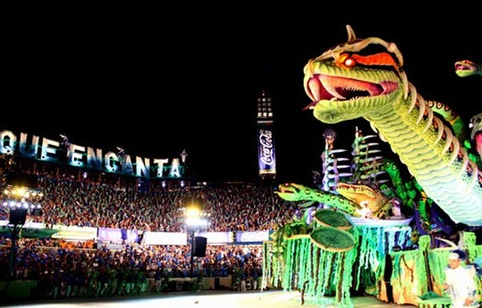

THE RIVER THAT WALKS
He owns the crossings — every river passage in the Amazon is his to grant or deny, and the drowned things beneath answer when he calls.

THE RIVER THAT WALKS
He owns the crossings — every river passage in the Amazon is his to grant or deny, and the drowned things beneath answer when he calls.
Feature map
Level-by-level features, as the figure refined them.
Coil and Strike
Bonus action · 2 CE.
Tier IV · Striker · Suggested CE ability: DEX · Primary verb: Drown. Technique DC = 8 + proficiency bonus + DEX modifier. He owns the passages — the fords, the narrows, the crossings. Who crosses the water crosses him. (Rivers, specifically — the sky is not his country.) Encantado. Cobra Norato has a swim speed of 40 ft, can breathe underwater, and cannot be surprised while in water.
While in water or within 5 ft of a body of water: a black coil lashes out — melee attack with reach 15 ft, using DEX: 3d8 + DEX modifier bludgeoning damage on a hit, and the target must succeed on a STR save against the technique DC or be pulled 10 ft toward the water.
The Deep Place
passive
While Cobra Norato is in water, attacks against him from creatures not in the water have disadvantage — the deep place hides its own. (He does not fight on land. This is jurisdiction, not limitation.)
The River Decides
Reaction · 2 CE · once per round.
When a hostile creature moves within 20 ft of a body of water, the current takes an interest: STR save against the technique DC or be pulled 15 ft into the water and knocked prone. A creature that succeeds cannot be pulled again for 1 minute. (The crossing is his to grant.)
The Drowned Rise
Bonus action · 3 CE.
The congregation answers: spectral drowned rise in water within 60 ft — up to three shades, each immediately making one melee attack (+PB + DEX modifier to hit, reach 5 ft, 2d6 necrotic damage) against a creature of his choice in the water, then sinking again.
Own the Crossing
Action · 4 CE · 1 hour.
Cobra Norato designates a water passage up to 200 ft long that he can see. For the duration, hostile creatures cannot cross it without his leave: any attempt requires a DEX save against the technique DC — on a failure the creature is pulled under, restrained until it succeeds on the save at the end of its turn, taking 3d8 bludgeoning damage at the start of each of its turns while restrained. Willing-decline: any creature may instead pay the toll — take 2d8 force damage, no save — and cross freely.
The Flood Comes Up
Action · 8 CE · 1 minute.
The river shrugs: flood a 60-ft radius centered on a point within 90 ft. The area becomes difficult terrain and counts as water for all his features. Hostile creatures in the area when it floods must succeed on a STR save or be swept 20 ft in a direction of his choice and knocked prone.
Maximum, Domain, or equivalent.
Capstone material.
Maximum: THE COBRA GRANDE
He stops being the man-shaped rumor and becomes the tale entire: Cobra Norato transforms into a Huge serpent — swim speed 60 ft, advantage on STR saves, immune to the restrained condition. Bite (action): melee attack (+PB + DEX modifier to hit), reach 15 ft, 6d10 + DEX modifier piercing damage, and the target is grappled (escape DC = technique DC). Constrict: a grappled creature takes 4d10 bludgeoning damage at the start of each of its turns.
THE RIVER REMEMBERS
The ground becomes riverbed; the air smells of deep water. The whole Domain counts as water for his features. Sure-hit: at initiative 20, the current takes them: each hostile creature is dragged 15 ft toward the Domain's center — no save; the current is the sure-hit. Willing-decline: a creature may instead drop prone and hold fast, taking no pull until the next initiative 20 — Heaven honors the choice to cling. The drowned rise unbidden: at initiative 20, one spectral shade attacks as in The Drowned Rise, no CE cost.
- Clash points
- 800
- Burnout
- 5 rounds
- Duration
- 2 minutes
- Radius
- 60-ft radius
- Activation ✦
- full-turn action
- CE cost ✦
- 20
✦ Canon: figure Domains are Specific Domains — the stated profile governs, not the player point-unlock table.
NO CHAIN HOLDS WATER
Once per long rest, when Cobra Norato would become bound, restrained, paralyzed, or dominated by a technique or magical effect, he may spend 5 CE to shed the skin instead: the effect ends, he teleports up to 60 ft to unoccupied water he can see (or the nearest body of water within 60 ft), and a shed serpent-skin is left behind where he stood. The skin cannot shed vows — a genuinely sworn vow's price is not a binding the river can cross. He is immune to the charmed condition — the river is not seduced; it is crossed, or it is not.
Build-defining options.
This technique grants Innate Technique Feats — hand-authored applications of the figure's art, available in the builder's feat picker when you select this technique.
Edge cases and shared systems.
Campaign canon notes